Introduction
Ce rapport accompagne le relevé d'audit effectué sur le site « chl.lu ».
La méthodologie d'audit employée repose sur le référentiel RGAA 4.1, consultable à l'adresse suivante : https://accessibilite.public.lu/fr/rgaa4.1/criteres.html
L'audit a été réalisé au moyen de l'utilisation de navigateurs web et d'outils spécialisés. Des tests de restitution ont également été effectués conformément à la base de référence définie par le RGAA 4.1.
Échantillon
L'audit a porté sur un échantillon de 15 pages pour le niveau double A (AA) :
| Nº page | Titre de la page | URL |
|---|---|---|
| P01 | Accueil | https://www.chl.lu/fr/ |
| P02 | Contact | https://www.chl.lu/fr/contact |
| P03 | Recherche | https://www.chl.lu/fr/search/site/m%25C3%25A9decin |
| P04 | Annuaire médical | https://www.chl.lu/fr/annuaire |
| P05 | Le CHL | https://www.chl.lu/fr/content/le-chl-en-bref |
| P06 | Service | https://www.chl.lu/fr/services |
| P07 | Anesthésie | https://www.chl.lu/fr/service/anesthesie |
| P08 | Urgences | https://www.chl.lu/fr/urgences |
| P09 | Payer ma facture | https://www.chl.lu/fr/paiement-factur |
| P10 | Presse | https://www.chl.lu/fr/press |
| P11 | Agenda | https://www.chl.lu/fr/agenda |
| P12 | Dossier | https://www.chl.lu/fr/dossier/cannabis-grossesse-et-allaitement |
| P13 | Rendez vous | https://www.chl.lu/fr/rendez-vous |
| P14 | Confirmation de RDV | https://www.chl.lu/fr/rendez-vous/confirmation |
| P15 | RDV Annulation | https://www.chl.lu/fr/annulation-rendez-vous/ |
Environnement de test (base de référence)
Quelques critères RGAA, notamment ceux de la thématique JavaScript, incluent des tests de restitution à effectuer sur des technologies d'assistance associées à des navigateurs et des systèmes d'exploitation. Pour qu'un dispositif HTML / WAI-ARIA ou son alternative soit considéré comme compatible avec l'accessibilité, il faut qu'il soit pleinement fonctionnel, en termes de restitution et de fonctionnalités sur certaines combinaisons. Vous trouverez une explication détaillée de cet environnement de tests dans le document du RGAA 4.1.
Nous détaillons ci-dessous la base de référence utilisée pour réaliser les tests de restitution des composants du site.
Environnement de test – ordinateur
| Technologie d'assistance | Navigateur |
|---|---|
| NVDA 2020.4 | Firefox 92 |
| JAWS 2020 | Internet Explorer 11 |
| VoiceOver | Safari 15 |
Environnement de test — mobile
| Système d'exploitation | Technologie d'assistance | Navigateur |
|---|---|---|
| Android 11 | TalkBack (dernière version) | Chrome 93 |
Accessibilité des pages auditées
Le site présente un niveau général d'accessibilité moyen.
Le niveau moyen de conformité relevé atteint 41,38 % de conformité sur l'ensemble des pages auditées, avec 39,53% de conformité au niveau simple A (A) et 40,35% de conformité au niveau double A (AA).
Le site est non conforme.
Conformité RGAA 4.1 du site
| Conforme | Non conforme | |
|---|---|---|
| A | 39,53% | 60,47% |
| AA | 41,38% | 58,62% |
Note sur le calcul de conformité
La conformité globale (Tableau « Conformité RGAA 4.1 ») est calculée de la manière suivante : C / (C+NC). C est le nombre de critères conformes et NC le nombre de critères non conformes.
C'est ce nombre qui constitue la référence légale. Il représente le taux de conformité de l'échantillon.
Il est normal que le taux de conformité global diffère sensiblement du taux de conformité par page. En effet, un critère NC (non conforme) sur une page rend le critère non conforme sur l'ensemble de l'échantillon.
Pour qu'un site soit conforme (100 % des critères applicables sont conformes au niveau AA), il est nécessaire que le taux de conformité par page équivaille à 100 %.
Conformité pour chaque niveau
| Conforme | Non conforme | |
|---|---|---|
| A | 39,53% | 60,47% |
| AA | 46,53% | 53,33% |
Moyenne par pages
| Nº page | Titre de la page | %C |
|---|---|---|
| P01 | Accueil | 53,85% |
| P02 | Contact | 67,65% |
| P03 | Recherche | 75,68% |
| P04 | Annuaire médical | 72,97% |
| P05 | Le CHL | 88,89% |
| P06 | Service | 77,14% |
| P07 | Cardiologie (détail d'un service) | 82,86% |
| P08 | Urgences | 88,89% |
| P09 | Payer ma facture | 69,77% |
| P10 | Presse | 75,00% |
| P11 | Agenda | 75,00% |
| P12 | Dossier | 86,21% |
| P13 | Rendez vous | 76,32% |
| P14 | Confirmation RDV | 100,00% |
| P15 | RDV Annulation | 76,32% |
Moyenne par thématiques
| Thématiques | C | NC |
|---|---|---|
| Images | 0,00% | 100,00% |
| Cadres | 100,00% | 0,00% |
| Couleurs | 0,00% | 100,00% |
| Multimédia | 0,00% | 0,00% |
| Tableaux | 0,00% | 0,00% |
| Liens | 50,00% | 50,00% |
| Script | 33,33% | 66,67% |
| Éléments obligatoires | 62,50% | 37,50% |
| Structuration | 0,00% | 100,00% |
| Présentation | 30,00%% | 70,00% |
| Formulaires | 53,85% | 46,15% |
| Navigation | 42,86 | 57,14% |
| Consultation | 40,00%% | 60,00% |
Impacts utilisateurs
Les principales personnes impactées sont les personnes aveugles et celles qui naviguent au clavier. Les problèmes liés aux scripts, à l'API ARIA et aux formulaires rendent parfois difficile l'utilisation du site par ces utilisateurs. Le site comporte également de nombreuses non-conformités de contrastes qui impacteront les personnes déficientes visuelles.
Contenus dérogés
La dérogation est un moyen d'exclure du champ d'application du référentiel des contenus particuliers. Les cas de dérogations sont très encadrés, vous en trouverez le détail dans le guide des dérogations.
Les contenus suivants n'entrent pas dans le calcul de la conformité ni dans le périmètre des éléments à rendre accessible, ils sont dérogés :
- Le système de captcha « Recaptcha », édité par un tiers et reconnu accessible par WCAG.
Droit à la compensation
Les dérogations émises notamment pour charge disproportionnée demandent en contrepartie la mise en place d'un moyen de compensation pour les utilisateurs. Pour les documents bureautiques par exemple, vous devez fournir un moyen à l'utilisateur de demander une version accessible d'un document s'il en a besoin. Cela peut être un mail ou un formulaire de contact.
Note sur le relevé des non-conformités
Ne sont cités dans ce rapport que quelques exemples issus du relevé des non-conformités.
De plus, toutes les occurrences d'une non-conformité ne sont pas listées dans le relevé. Par exemple : les défauts de contrastes, le relevé mentionne quelques occurrences, mais ne les cite pas tous.
Avis
Le site "chl.lu" dispose d'un bon socle HTML. Cependant, il comporte de nombreuses non-conformités de structure, de navigation et de scripts qui impacteront les utilisateurs qui naviguent au clavier et particulièrement les personnes aveugles. Les contrastes du site (sur le texte, les éléments interactifs et sur les liens dont la nature n'est pas évidente) ont également de nombreuses non-conformités qui impacteront les personnes malvoyantes.
Les non-conformités les plus bloquantes pour les utilisateurs concernent :
- Les scripts
- Les formulaires
- La structuration des pages
- L'absence d'un second système de navigation
Ce sont donc ces points qui devront nécessiter une attention toute particulière et qui demanderont le plus d'efforts.
Annexe technique
Images
Recommandation
Donner à chaque image porteuse d'information une alternative textuelle pertinente et une description détaillée si nécessaire. Lier les légendes à leurs images. Remplacer les images textes par du texte stylé lorsque c'est possible.
Images de décoration
Le site contient des images de décoration qui ne sont pas correctement identifiées, soit parce qu'elles ont une alternative renseignée, soit parce qu'il manque les attributs nécessaires pour qu'elles soient ignorées par les technologies d'assistance.
Ces images n'apportent aucune information et peuvent causer des problèmes de compréhension pour les aveugles et les grands malvoyants qui vont écouter les contenus avec un lecteur d'écran.
- Dans le cas d'une image insérée avec la balise
img, mettre unalt="". - Dans le cas d'une image insérée avec la balise
svg, mettre une propriété ARIAaria-hidden="true".
Constats sur le site

Sur la page d'accueil, dans l'encadré « Welcome », les images de décoration n'ont pas d'attribut alt.
Images porteuses d'information
Il est nécessaire de donner une alternative pertinente dans le cas où la suppression de l'image entraînerait un problème de compréhension des contenus.
Constats sur le site
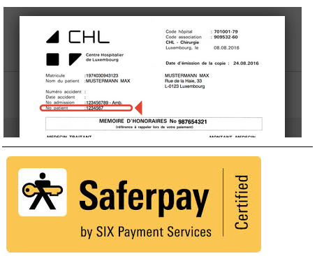Sur la page « Payer ma facture » :
- les images des fenêtres modales telles que « A quoi correspond le numéro du patient ? » n'ont pas d'alternative ;
- l'image « Saferpay by SIX Payment Services | Certified » doit avoir une alternative reprenant le texte visible ainsi qu'un attribut
lang="en"puisque l'alternative sera en anglais.
Couleurs
Recommandation
Ne pas donner l'information uniquement par la couleur et utiliser des contrastes de couleurs suffisamment élevés pour les textes et les composants d'interface.
Contrastes des textes
Plusieurs couleurs présentent un rapport de contraste insuffisant, ce qui peut poser problème aux grands malvoyants et aux déficients visuels qui ont des difficultés à percevoir les couleurs ou les contrastes.
Rapports de contrastes définis par le RGAA
- Pour les textes qui ont une taille de police calculée inférieure à 24px sans effet de graisse ou une taille de police calculée inférieure à 18,5px avec effet de graisse, le rapport de contraste entre la couleur du texte (y compris le texte en image) et son arrière-plan doit être de 4.5:1, au moins.
- Pour les textes qui ont une taille de police calculée supérieure ou égale à 24px sans effet de graisse ou une taille de police calculée supérieure ou égale à 18,5px avec effet de graisse, le rapport de contraste entre la couleur du texte (y compris le texte en image) et son arrière-plan doit être de 3:1, au moins.
Vous pouvez foncer les couleurs pour obtenir le rapport de contraste exigé.
Si la charte graphique ne peut être modifiée, fournissez une méthode aux utilisateurs pour consulter le site avec des contrastes suffisants. Ceci peut être réalisé simplement avec une fonctionnalité JavaScript et une surcharge CSS des couleurs.
Vous pouvez voir un exemple de ce type de mécanisme sur le site sncf.com. Dans les réglages d'accessibilité, vous trouverez une option qui permet d'afficher le site avec des contrastes renforcés et inversés.
Constats sur le site
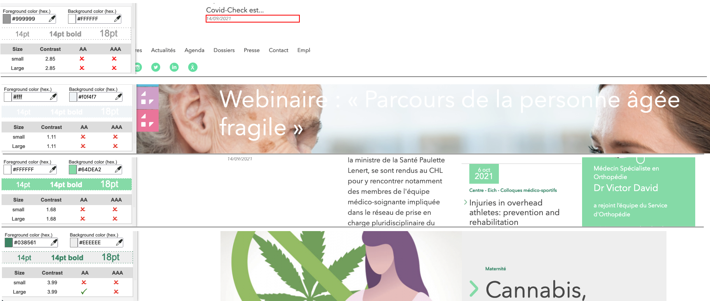Sur la page d'accueil :
- Les dates, en gris sur blanc, ont un contraste de 2.85 au lieu de 4.5 ;
- Dans le carrousel d'actualités, le texte blanc sur fond composite peut avoir un contraste de 1.11 au lieu de 4.5 ;
- Le texte en blanc sur vert clair a un contraste de 1.68 au lieu de 4.5 ;
- Le texte en vert sur gris a un contraste de 3.99 au lieu de 4.5.
Contraste des composants d'interface
Les composants d'interface, les illustrations porteuses d'information ou encore les mises en couleurs porteuses d'information doivent être suffisamment contrastés pour être perçus par les utilisateurs ayant des troubles de perception des couleurs. Par exemple, une icône porteuse d'information devra avoir un rapport de contraste avec la couleur de fond de 3. De même, pour un champ de saisie de formulaire, dont la zone active est matérialisée par sa bordure, alors la couleur de cette bordure devra avoir un rapport de contraste de 3 avec la couleur de fond de la page.
Constats sur le site
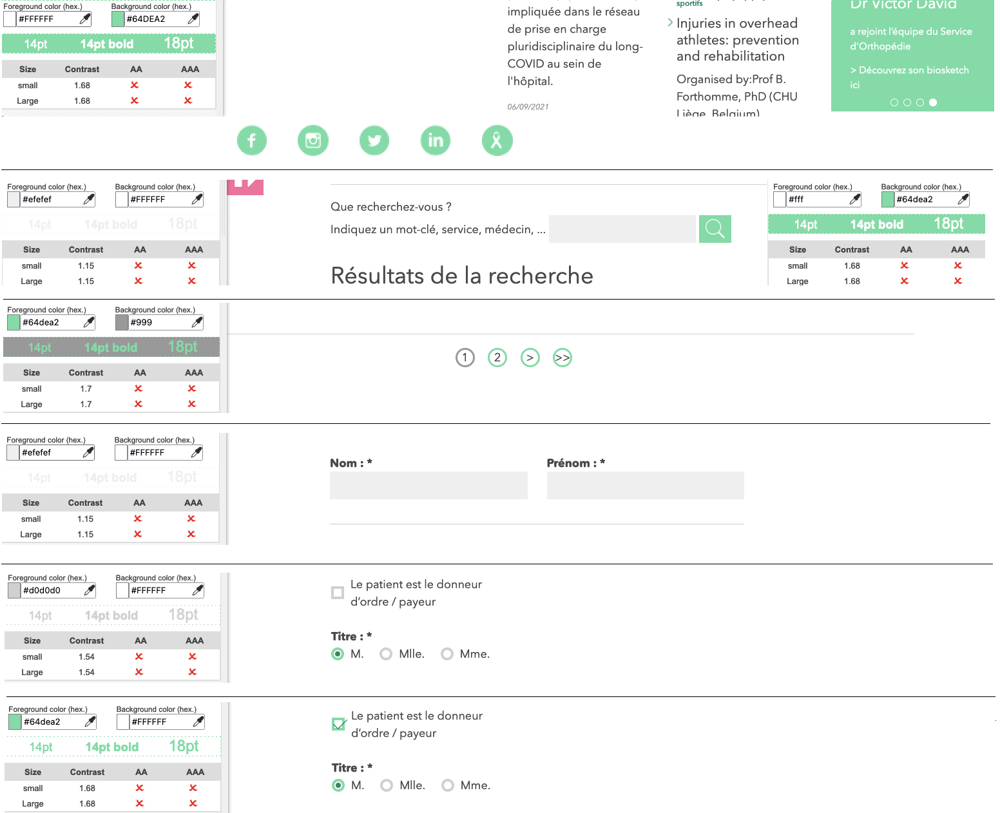- Sur la page d'accueil, les puces du carrousel « Welcome », en blanc sur fond vert, ont un contraste de 1.68 au lieu de 3 ;
- Dans le pied de page, les liens images des réseaux sociaux, blancs et verts ont un contraste de 1.68 au lieu de 3 ;
- Sur la page de recherche, la zone de saisie n'est délimitée que par sa couleur de fond, en gris sur blanc, avec un contraste de 1.15 au lieu de 3 ;
- Sur le composant de pagination, la différence de contraste entre le cercle entourant la page courante (en gris) des autres pages (en vert) est de 1.7 au lieu de 3 ;
- Sur la page de recherche, le bouton de recherche (une loupe blanche sur un fond vert) a un contraste de 1.68 au lieu de 3 ;
- Sur la page "payer ma facture", les champs de formulaire sont délimités par leur couleur de fond grise sur un fond de page blanc, avec un contraste de 1.15 au lieu de 3 ;
- Sur la page "payer ma facture, les boutons radio et la case à cocher sont délimités par leur bordure grise sur un fond blanc, avec un contraste de 1.54 au lieu de 3 ;
- Sur la page "payer ma facture, les boutons radio et la case à cocher ont une bordure verte à leur état "coché", le contraste avec le fond blanc est de 1.68 au lieu de 3.
Information par la couleur
Lorsqu'une information est donnée par la couleur, il faut qu'elle soit également véhiculée par une autre méthode, par exemple par un texte qui donne la même information, pour être perçue par les utilisateurs aveugles.
Il faut également donner un indice visuel autre que la couleur, afin de répondre aux besoins des personnes déficientes visuelles (les daltoniens par exemple). Il peut s'agir d'un symbole, d'une texture, de chiffres.
Constats sur le site
Sur la page d'accueil, la slide active du carrousel des actualités n'est indiquée que par la couleur.
Liens
Recommandation :
Donner des intitulés de lien explicites, grâce à des informations de contexte notamment, utiliser le titre de lien le moins possible. S'assurer que le nom visible est contenu dans le nom accessible.
Liens-images
Un lien-image est un lien dont le contenu n'est composé que d'une ou plusieurs images (balises <img>). Généralement, ces liens ne posent aucun problème aux utilisateurs voyants qui parviennent à comprendre la destination du lien grâce à l'image et son contexte. En revanche, pour une personne aveugle, ces liens doivent obligatoirement posséder un intitulé.
L'intitulé d'un lien-image est généré grâce à l'alternative de l'image contenue dans ce lien.
Constats sur le site
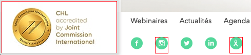Sur la page d'accueil :
- Le lien image « CHL accredited by Joint Commission International » n'a pas d'intitulé. L'image doit avoir un attribut
altqui reprend le texte visible :alt="CHL accredited by Joint Commission International". L'alternative étant en anglais, ajoutez également un attributlang="en". - Dans le pied de page, les liens « Retrouvez le CHL sur Instagram » et « Le blog du Groupe Sein CHL » ont bien un intitulé via leur attribut
title. Cependant, ces liens contiennent une image<svg>qui doit être indiquée comme image de décoration via la propriétéaria-hidden="true".
Scripts
Recommandation :
Donner si nécessaire à chaque script une alternative pertinente. Rendre possible le contrôle de chaque code script au moins par le clavier et la souris et s'assurer de leur compatibilité avec les technologies d'assistance. Identifier les messages de statut lorsque c'est nécessaire.
Utilisation des boutons et des liens
Pour les aveugles et les grands malvoyants qui utilisent un lecteur d'écran, ce manque de distinction claire entre les liens et les boutons peut poser de graves problèmes.
Ainsi, un bouton implémenté sous la forme d'un lien qui déclenche une action de la page, risque de perturber l'utilisateur qui s'attendra au chargement d'une nouvelle page.
De manière générale, les liens devraient être réservés à l'affichage d'une nouvelle page ou la création de liens d'accès rapide dans le contenu. Dans tous les autres cas, l'emploi d'un bouton d'action est plus pertinent.
Enfin, chaque bouton doit avoir un nom accessible défini, soit par l'intermédiaire d'un texte (visible ou positionné hors écran) ou d'une propriété title, aria-label ou aria-labelledby.
Constats sur le site
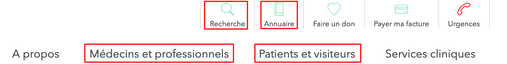Sur la page d'accueil, les éléments qui déplient la navigation principale, la recherche et l'aide, sont intégrés dans des liens <a>.
Carrousel à puces
Le site possède au moins un carrousel complexe, c'est-à-dire un carrousel qui possède des boutons « Suivant », « Précédent » et/ou un système de navigation, généralement sous forme de puces permettant d'activer un contenu particulier du carrousel.
Pour ce type d’élément, l’implémentation du modèle ARIA Tabbed Carousel est recommandée.
Constats sur le site
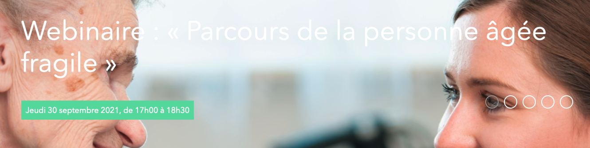Sur la page d'accueil, le carrousel des actualités n'implémente pas correctement le motif ARIA Tabbed Carousel.
Système d'onglets (tabs)
Certaines pages contiennent des systèmes d'onglets qui n'implémentent pas ou mal le modèle de conception ARIA Tabs.
Constats sur le site
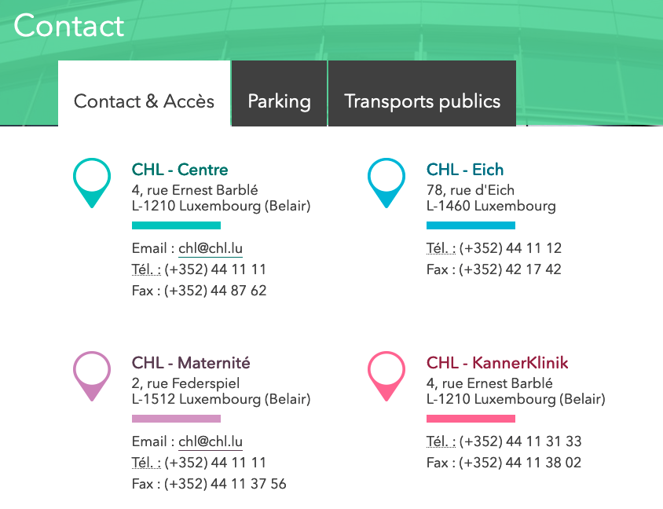Sur la page de contact, le système d'onglets "Contact & Accès" - "Parking" - "Transports publics" ne respecte pas le modèle de conception ARIA Tabs. Les onglets non actifs ("Parking" et "Transports publics" ne sont pas accessibles au clavier.
Fenêtres modales
Le site contient des fenêtres modales qui n'implémentent pas ou mal le modèle de conception ARIA dialog. Ces fenêtres doivent être titrées, le focus doit être possible à l’intérieur tout comme la possibilité de les quitter via le clavier. Sans cela, les utilisateurs navigant via un lecteur d’écran peuvent se retrouver bloqués sur la modale et/ou ne seront pas informés de son ouverture.
Une bonne méthode est d’implémenter ou de s’inspirer du modèle de conception ARIA dialog comme décrit par le W3C.
Constats sur le site
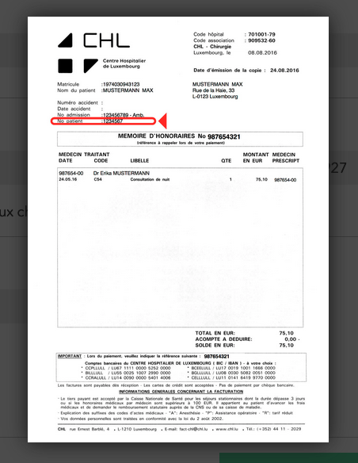Sur les différentes étapes de la page « Payer ma facture », les fenêtres modales d'aide ne sont pas conformes.
Changement de contexte
Un changement de contexte est une situation où un utilisateur ne peut pas anticiper le fonctionnement d'une fonctionnalité lorsque celle-ci ouvre une nouvelle page, valide un formulaire ou ajoute ou modifie du contenu dans la page par exemple.
Cela concerne plus spécifiquement les fonctionnalités qui se lancent sans que l'utilisateur puisse les anticiper comme, par exemple, la soumission automatique d’un champ de formulaire sur la sélection d'un item ou lorsque l'utilisateur quitte un champ de saisie.
Constats sur le site
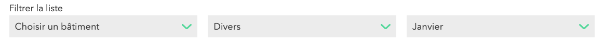Les pages ayant un système de filtres (actualités, dossiers, presse, agenda), utilisent des éléments <select>. La page se recharge dès qu'une valeur est sélectionnée (action à l'événement onchange). Ajouter un bouton pour actionner le filtre (comme pour la recherche par mot-clé).
Éléments obligatoires
Recommandation
Vérifier que chaque page web a un code valide selon le type de document, un titre pertinent et une indication de langue par défaut. Vérifier que les balises ne sont pas utilisées uniquement à des fins de présentation, que les changements de langues et de direction de sens de lecture sont indiqués.
Titre de la page
Le titre de la page (visible dans l'onglet du navigateur) est un élément de repère dans le site web. Pour les utilisateurs de lecteurs d'écran (utilisateurs aveugles ou grands malvoyants), c'est le premier élément restitué par le lecteur d'écran au chargement de la page. Cela permet de donner du contexte aux utilisateurs qui n'ont pas une vision globale de la page. Pour les utilisateurs avec des troubles de la mémoire, c'est l'information à laquelle ils accèdent lorsqu'ils naviguent avec l'historique de navigation du navigateur. Il est donc essentiel d'avoir des titres de pages pertinents, concis et très souvent uniques dans le site, et qui reflètent de la position de l'utilisateur dans le site web.
Il est des cas particuliers, comme les pages dont le contenu est une liste de résultats paginés (ex. : les résultats de recherche), pour lesquels le titre doit refléter la nature de la recherche ainsi que le numéro de page en cours de consultation.
Constats sur le site
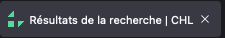Sur la page de recherche, le titre de la page doit reprendre le(s) terme(s) recherché(s) ainsi que le numéro de la page active. Exemple : Résultats de la recherche pour : "médecin" - page 1 | CHL.
Indication de langue
Les lecteurs d'écrans utilisent les indications de langue pour vocaliser le contenu dans la langue définie. La page doit contenir une définition de langue principale (généralement sur l'élément html).
Ensuite, les éléments de langue étrangère présents dans le contenu doivent être signalés. Si on trouve dans la page des termes absents du dictionnaire de la langue principale de la page, il faut les identifier afin que le lecteur d'écran les restitue dans la langue appropriée. En effet, une mauvaise prononciation pourrait mener à des incompréhensions pour les utilisateurs qui reposent uniquement sur des restitutions orales. Les noms propres sont exclus de cette obligation.
Constats sur le site

- Sur le formulaire de la page "Payer ma facture", le message d'erreur « The answer you entered for the CAPTCHA was not correct. » est en anglais ,
- Sur la page de recherche, si un filtre est actif, le label de case à cocher « Retain current filters » apparait.
Balises utilisées à des fins de présentation
Les éléments de structure HTML ont chacun une sémantique particulière (paragraphe, titre, image, lien, etc.). Si les éléments sont mal employés (détournés de leur utilité première), cela peut poser des problèmes aux utilisateurs qui naviguent à l'aide d'une technologie d'assistance (lecteur d'écran, plug-in…). En effet, les technologies d'assistance disposent de raccourcis permettant de naviguer rapidement entre certains types d'éléments (paragraphes, titres, listes, etc.). Si ces éléments sont mal employés, les utilisateurs ne peuvent pas utiliser ces fonctionnalités de repère et de navigation dans le contenu.
Constats sur le site
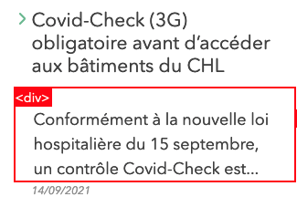Sur la page d'accueil, le résumé des actualités (exemple « Conformément à la nouvelle loi hospitalière du 15 septembre, un contrôle Covid-Check est.. » est directement intégré dans un élément <div>.
Structuration de l'information
Recommandation
Utiliser des titres, des listes, des abréviations et des citations pour structurer l'information. S'assurer que la structure du document est cohérente.
Titres
Le titrage des contenus est une étape importante dans leur structuration. Cela répond à deux besoins :
- identifier rapidement un contenu recherché ;
- naviguer rapidement dans le contenu en se déplaçant de titre en titre.
Un titrage correct fournit à l'utilisateur d'un lecteur d'écran un plan du document et lui permet de naviguer de titre en titre pour se déplacer plus rapidement dans le contenu de la page.
Pour valider la structure de votre page, vous pouvez utiliser l'extension Firefox HeadingsMap. Lorsque l'extension est active, sélectionnez l'onglet « Headings » et vérifiez la cohérence et l'imbrication des titres.
Constats sur le site
Sur la page d'accueil, le titre du bloc « Welcome » doit être un titre de niveau 2.
Listes
La structuration en listes permet aux utilisateurs de lecteurs d'écrans de consulter plus rapidement le contenu, grâce à des raccourcis spécifiques, et d'accéder directement à une liste ou de la passer sans avoir à en parcourir tous les items.
Constats sur le site
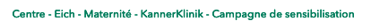La suite de liens des catégories de chaque article n'est pas intégrée en liste.
Structure du document
L'utilisation correcte des balises HTML5 et des landmarks ARIA va permettre d'enrichir la restitution pour les utilisateurs aveugles qui ne perçoivent pas les mises en forme : la navigation principale ne sera plus perçue simplement comme une liste de liens, elle sera restituée à l'utilisateur comme un élément de navigation, par l'intermédiaire du lecteur d'écran qui annoncera « région » ou « repère ».
De plus, ces marqueurs sémantiques vont également constituer des éléments de navigation rapide dans la page. Grâce à un raccourci clavier, certains utilisateurs vont pouvoir naviguer plus rapidement entre les régions qui auront été ainsi identifiées.
Constats sur le site
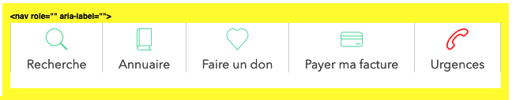Sur la page d'accueil, la suite de liens « Recherche », « Annuaire », « Faire un don », « Payer ma facture », « Urgences » ainsi que la suite de liens de la barre latérale « CHL », « Centre », « EICH », « Maternité », « Kannerklinik » ne sont pas considérées comme des éléments de navigation, or elles sont balisées comme tels.
Présentation de l'information
Recommandation
Utiliser des feuilles de styles pour contrôler la présentation de l'information. Vérifier l'effet de l'agrandissement des tailles des caractères sur la lisibilité. S'assurer que les liens sont correctement identifiables, que la prise de focus est signalée, que l'interlignage est suffisant et donner la possibilité à l'utilisateur de contrôler la justification des textes. S'assurer que les textes cachés sont correctement restitués et que l'information n'est pas donnée uniquement par la forme ou la position d'un élément. S'assurer que les contenus sont lisibles et utilisables dans une fenêtre de largeur réduite. Veiller à ce que l'application de paramètres typographiques n'entraîne pas la perte de contenu ou de fonctionnalité. S'assurer que les contenus qui apparaissent au survol et à la prise de focus puissent être contrôlés par l'utilisateur.
Utilisation de CSS exclusivement
Certains utilisateurs qui présentent des troubles de la lecture (personnes dyslexiques par exemple), vont avoir besoin d'adapter la présentation des pages avec leurs propres mises en forme. Cela est possible sans difficulté si le site web utilise exclusivement les feuilles de styles CSS pour réaliser les mises en forme. Cependant, l'utilisation d'attributs et balises HTML de mise en forme rend ces adaptations plus compliquées, sinon impossibles.
Le RGAA donne la liste des attributs et balises qu'il est interdit d'utiliser.
Constats sur le site
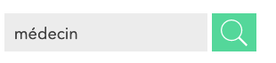Sur la page de recherche, le champ de recherche possède un attribut size="20".
Couleur de police et couleur de fond des textes
De nombreux navigateurs permettent aux utilisateurs de choisir une couleur par défaut pour le texte et le fond, à utiliser sans avoir à modifier tous les styles spécifiés par l'auteur. Cela permet aux utilisateurs de visualiser des pages dont les couleurs n'ont pas été spécifiées par l'auteur dans leur combinaison de couleurs préférée.
Pour cette raison, si l'auteur du site a défini une couleur de police sans spécifier de couleur de fond associée, il est possible que le contraste résultant ne soit plus suffisant pour l'utilisateur.
Constats sur le site
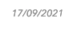Les dates articles (exemple "17/09/2021") sont en gris, sans avoir de couleur de fond associée.
Contenu compréhensible sans les styles : ordre visible vs ordre réel
Un utilisateur aveugle n'a pas accès à la mise en forme qui parfois est porteuse d'informations importantes, notamment des relations entre les éléments.
Il est important de ne pas implémenter les textes dans l'ordre visuel, mais bien dans l'ordre logique de dépendance et hiérarchie des éléments.
Le contenu doit rester compréhensible sans les feuilles de styles (vous pouvez tester vos contenus en désactivant les feuilles de styles).
Constats sur le site
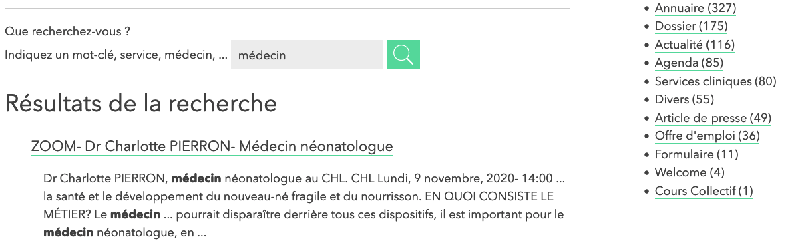Sur la page de recherche, les filtres sont situés après les résultats et la pagination. La logique voudrait qu'ils se situent avant les résultats.
Liens dont la nature n'est pas évidente
Un lien dont la nature n'est pas évidente est un lien qui peut être confondu avec un texte normal lorsqu'il est signalé uniquement par la couleur par certains utilisateurs ne percevant pas ou mal les couleurs.
Les personnes déficientes visuelles peuvent ignorer ces liens puisque ceux-ci ne sont pas visuellement discernables du reste du texte dans lequel ils sont insérés.
Constats sur le site
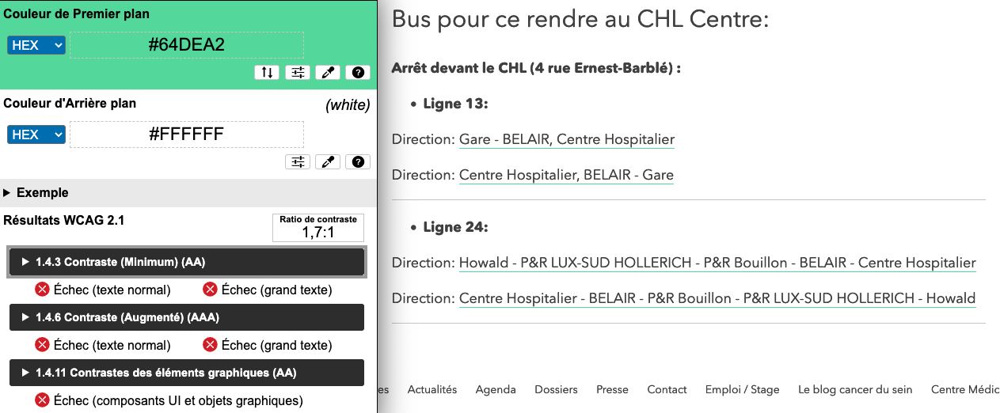Sur la page contact, dans l'onglet « Transports publics », les liens ne sont indiqués que par un souligné vert dont le contraste par rapport au fond blanc est de 1.7 au lieu de 3.
Visibilité de la prise de focus
Les personnes avec un handicap moteur qui naviguent au clavier peuvent rencontrer des difficultés considérables à utiliser du contenu si elles ne sont pas en mesure de repérer l'indication visuelle du focus et ses déplacements.
Constats sur le site
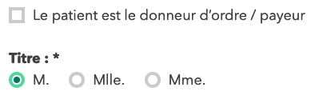Sur la page "Payer votre facture", la prise de focus sur les boutons radio ainsi que sur les cases à cocher n'est pas visible.
Largeur réduite
Il s'agit ici de tester la capacité des contenus à se réorganiser lorsqu'un utilisateur malvoyant doit réaliser un zoom graphique de 400%. À ce titre, on teste la lisibilité des contenus dans une fenêtre de largeur réduite à 320px.
On s'assure que l'utilisateur a accès à tous les contenus et que tous les contenus sont lisibles sans avoir recours à la barre de défilement horizontale.
Constats sur le site
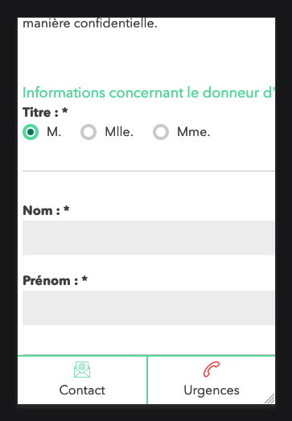Sur la page « Payer votre facture », le formulaire de l'étape 1 est tronqué et génère une barre de défilement horizontale.
Paramètres typographiques
Les utilisateurs malvoyants et/ou dyslexiques ont souvent recours à des adaptations de la présentation des textes. Pour cela, on doit s'assurer que de tels paramètres ne viennent pas perturber leur lecture sur le site.
Les présentations doivent supporter l'application de paramètres typographiques visant à augmenter les interlignages, interlettrages, les espaces entre les mots et entre les paragraphes. L'application de ces paramètres ne doit pas entraîner la perte de contenus ou de fonctionnalité :
- L'interlignage augmenté de 1,5 fois la taille de la police
- L'espacement entre les paragraphes augmenté de 2 fois la taille de la police
- L'espacement des lettres augmenté de 0,12 fois la taille de la police
- L'espacement des mots augmenté jusqu'à 0,16 fois la taille de la police
Constats sur le site
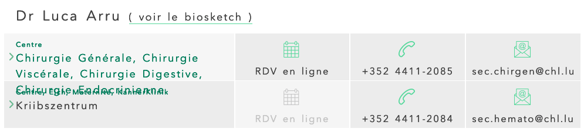Sur la page « Annuaire », le texte peut déborder de sa ligne.
Contenus additionnels au survol et au focus
Les contenus additionnels qui apparaissent au survol ou à la prise de focus (par exemple, un menu déroulant, une infobulle d'information), peuvent être contrôlés par l'utilisateur. Par exemple, les utilisateurs malvoyants utilisateurs de loupes d'écrans peuvent déclencher l'affichage accidentel des contenus qui apparaissent au survol et ces affichages non désirés perturbent la consultation pour ces utilisateurs. L'utilisateur doit alors disposer d'un moyen simple pour les masquer et continuer sa consultation.
Également, en utilisant une loupe d'écran, il est probable que le contenu additionnel soit en fait apparu en dehors de la zone de zoom de la loupe, l'utilisateur doit pouvoir survoler le contenu additionnel à la souris.
Constats sur le site
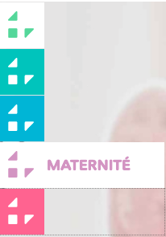Dans le menu des établissements, sur la gauche des pages, le texte du lien apparait au survol sans pouvoir être contrôlé.
Formulaires
Recommandation :
Associer pour chaque formulaire chacun de ses champs à son étiquette, grouper les champs dans des blocs d'informations de même nature, regrouper les items de même nature dans les listes de choix, donner à chaque bouton un intitulé explicite. Vérifier la présence d'aide à la saisie, s'assurer que le contrôle de saisie est accessible et que l'utilisateur peut contrôler les données à caractère financier, juridique ou personnel.
Étiquettes et champs
Les champs de formulaires doivent tous posséder des étiquettes correctement reliées.
Une étiquette de champ est un texte situé à proximité du champ de formulaire qui permet de connaître la nature, le type ou le format des informations attendues.
De cette manière, lorsqu'un utilisateur entre dans le champ de saisie avec un lecteur d'écran, le lecteur d'écran lit le contenu de l'étiquette. L'utilisateur comprend alors ce qu'il doit saisir.
Sans cela, même si une étiquette est présente visuellement, l'utilisateur entendra « champ de saisie vide » en entrant dans le champ et ne saura donc pas quoi saisir.
Constats sur le site
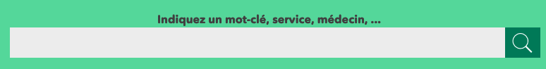Sur le formulaire de recherche, le label « Indiquez un mot-clé, service, médecin, ... » n'est pas correctement relié au champ (le champ n'a pas d'attribut id).
Intitulés de bouton pertinents
Les boutons qui permettent d'interagir avec les formulaires doivent avoir des intitulés pertinents pour que l'utilisateur comprenne l'action du bouton.
Ces intitulés sont essentiels pour les personnes aveugles, afin qu'elles soient sûres de l'action qu'elles s'apprêtent à réaliser.
Constats sur le site
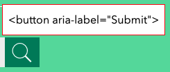Dans le moteur de recherche de l'entête, le bouton « loupe » a une propriété aria-label="submit". Ce n'est pas pertinent. Remplacer la propriété aria-label par un attribut title="rechercher".
Contrôle de saisie et aide à la saisie
Tous les champs obligatoires doivent être identifiés préalablement à toute validation de l’utilisateur.
Pour les champs qui attendent un format de saisie particulier pour être validés, ce format doit être spécifié à l’utilisateur par un passage de texte visible à proximité du champ. De plus, si l’utilisateur commet une erreur sur ce champ, alors le message d’erreur doit présenter un exemple réel de saisie.
Enfin, les messages d'erreur de saisie des champs de formulaire doivent être liés correctement aux champs en erreur.
Constats sur le site
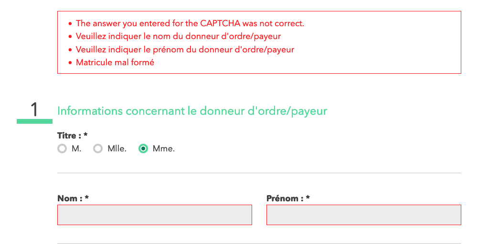 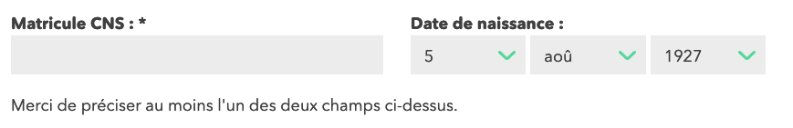Sur le formulaire de la page « Payer votre facture » :
- l'indication de champ obligatoire (exemple "Les champs obligatoires sont marqués d'un * ") est absente. Elle doit se trouver en début de formulaire ;
- l'indication « Merci de préciser au moins l'un des deux champs ci-dessus. » doit se trouver avant les champs concernés ;
- le champ "matricule CNS*", attend un format particulier qui n'est pas spécifié ;
- les messages d'erreurs ne sont pas programmatiquement reliés à leur champ via une propriété
aria-describedby; - les champs en erreur ne sont pas marqués programmatiquement par une propriété
aria-invalid="true" ; - le message d'erreur concernant le format du champ « matricule CNS » doit comporter un exemple réel de saisie.
Regroupements de champs et légendes
Les regroupements de champs sont utiles pour ne pas induire certains utilisateurs en erreur, notamment les personnes aveugles.
Les cas typiques de regroupements nécessaires sont les groupes de cases à cocher ou de boutons radio.
Il est nécessaire d'implémenter les champs dans un regroupement lorsque c'est nécessaire et il est obligatoire de définir une légende à ce regroupement.
Constats sur le site
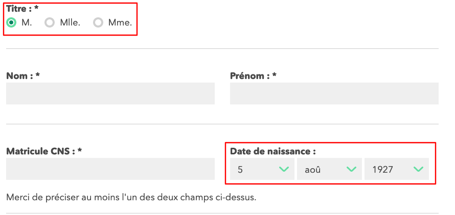Sur le formulaire de la page « Payer votre facture » :
- Les boutons radio correspondant au « Titre » ne sont pas regroupés. Utiliser « Titre : » comme
<legend>; - Les champs
<select>correspondants au regroupement « Date de naissance » ne sont pas regroupés. Utiliser « Date de naissance : » comme<legend>;
Identification des données attendues
Certains utilisateurs qui ont des troubles d'accès au langage verbal (paralysie cérébrale, aphasie par exemple) auront des difficultés à accéder au sens des termes écrits. Ainsi, pour leur permettre de remplacer les étiquettes présentes dans les formulaires par des étiquettes (verbales ou imagées) qu'ils connaissent, il est nécessaire d'identifier les champs avec un attribut particulier, de sorte qu'une technologie d'assistance pourra réaliser la personnalisation du formulaire nécessaire à l'utilisateur.
L'identification de ces champs permet également aux utilisateurs d'employer des outils pour remplir automatiquement les champs identifiés avec des valeurs de l'utilisateur.
On ne va rechercher que les champs qui attendent une donnée personnelle. Le RGAA demande d'utiliser l'attribut autocomplete et il fournit l'ensemble des valeurs possibles pour l'attribut.
Constats sur le site
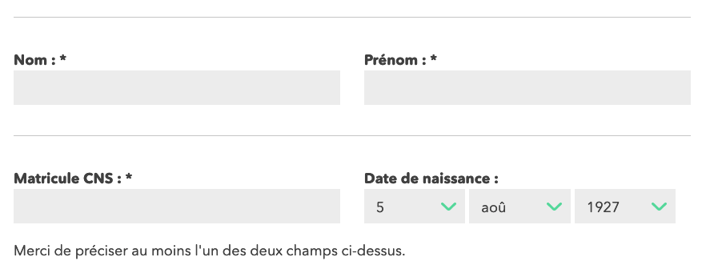Sur le formulaire de la page « Payer ma facture », les champs « nom », « prénom » et « email » n'ont pas d'attribut autocomplete.
- Nom :
autocomplete="family-name" - Prénom :
autocomplete="given-name" - Email :
: autocomplete="email"
Navigation
Recommandation :
Faciliter la navigation dans un ensemble de pages par au moins deux systèmes de navigation différents (menu de navigation, plan du site ou moteur de recherche), un fil d'Ariane et l'indication de la page active dans le menu de navigation. Identifier les groupes de liens importants et la zone de contenu et donner la possibilité de les éviter par des liens de navigation interne. S'assurer que l'ordre de tabulation est cohérent et que la page ne comporte pas de piège au clavier. S'assurer que les raccourcis clavier qui utilisent une seule touche sont contrôlables par l'utilisateur.
Systèmes de navigation
Le RGAA demande qu'un site propose au moins deux systèmes de navigation différents. Prévoir deux systèmes de navigation au moins est important, car :
- tous les utilisateurs ne naviguent pas de la même manière ;
- certains systèmes de navigation peuvent s'avérer trop complexes à utiliser, en particulier pour les personnes qui ont recours à des technologies d'assistance. Par exemple, un menu de navigation trop riche, comme un méga-menu, peut nécessiter beaucoup d'actions pour un utilisateur qui navigue exclusivement au clavier, et donc rendre sa recherche d'information très laborieuse.
Par systèmes de navigation, on entend tout procédé permettant une navigation dans le site ou dans une page, parmi :
- un menu de navigation principal ;
- un plan du site ;
- un moteur de recherche.
Note : un moteur de recherche est considéré comme un moyen de navigation s'il indexe toutes les pages du site (y compris les pages de type « Mentions légales » ou « Politique de confidentialité »), et non pas seulement un choix limité (par exemple, seulement les offres tarifaires).
Le plan du site, s’il est présent, doit être représentatif de l’arborescence du site et ne proposer que des liens fonctionnels.
Constats sur le site
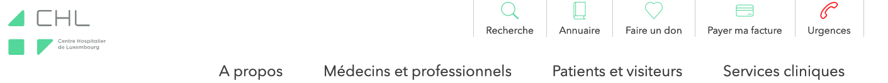Le site ne comporte qu'un seul système de navigation : le menu principal. Il n'y a pas de plan du site et le moteur de recherche n'indexe pas toutes les pages du site.
Liens d'accès rapide
On note l'absence d'un lien d'accès rapide au contenu au moins. Les liens d'accès rapides sont utiles aux utilisateurs qui naviguent au clavier, mais aussi aux utilisateurs malvoyants qui utilisent une loupe d'écran afin de sauter rapidement les éléments redondants, comme la navigation.
Pour cela, il est préférable que ces liens soient toujours visibles à l'écran. Malgré cela, ces liens peuvent être positionnés hors écran, mais doivent au moins être rendus visibles à la prise de focus.
Il est donc nécessaire d'implémenter au moins un lien d'accès rapide au contenu, qui permet de sauter toute la navigation principale.
Constats sur le site
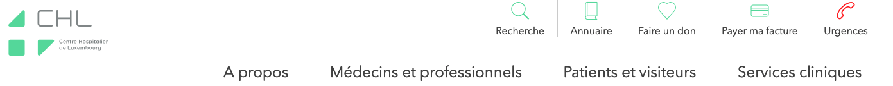Le site ne comporte aucun lien d'accès rapide.
Landmarks ARIA
Pour fournir des points de repère aux utilisateurs aveugles, il faudra également implémenter les landmarks ARIA sur les balises HTML 5 de la page.
Constats sur le site
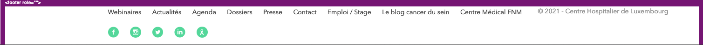Il manque un attribut role="contentinfo" sur le pied de page principal ainsi que les attributs role="navigation" aria-label="navigation principale" sur le menu principal.
Ordre de tabulation
La navigation dans les contenus peut être considérablement compliquée pour les personnes aveugles ou les personnes handicapées motrices qui naviguent au clavier si l'ordre de tabulation n'est pas cohérent.
L'ordre de tabulation est déterminé par l'ordre des éléments dans le code HTML. Il ne suit pas forcément l'ordre de lecture de la page ou de l'écran, mais il doit être cohérent en fonction de la nature des contenus et des fonctionnalités.
Constats sur le site
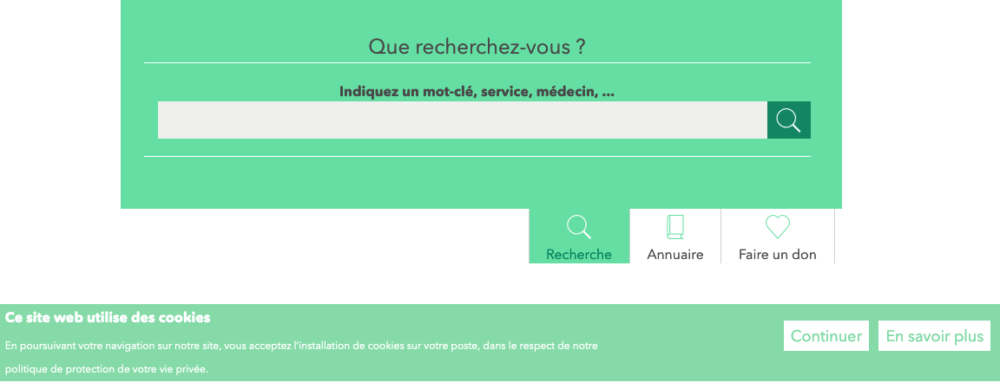- La bannière de cookie doit être le premier élément qui reçoit le focus à la navigation au clavier ;
- Lorsque la recherche ou l'annuaire sont dépliés, la tabulation doit directement passer de l'élément déclencheur au contenu du panneau déplié. Le contenu du panneau se trouve avant son élément déclencheur dans le code source, ce qui rend son contenu inaccessible au clavier.
Consultation
Recommandation
Vérifier que l'utilisateur a le contrôle des procédés de rafraîchissement, des changements brusques de luminosité, des ouvertures de nouvelles fenêtres et des contenus en mouvement ou clignotants. Ne pas faire dépendre l'accomplissement d'une tâche d'une limite de temps sauf si elle est essentielle et s'assurer que les données saisies sont récupérées après une interruption de session authentifiée. Proposer des versions accessibles ou rendre accessibles les documents en téléchargement. S'assurer que la consultation n'est pas dépendante de l'orientation de l'écran. Toujours proposer un geste simple en alternative d'un geste complexe permettant de réaliser une action.
Documents en téléchargement
Assurez-vous que chaque document soit accessible (cf. les Guides de créations de documents bureautiques accessibles), ou qu'il dispose d'une alternative accessible proposant le même contenu (par exemple, une version HTML correctement structurée).
Constats sur le site
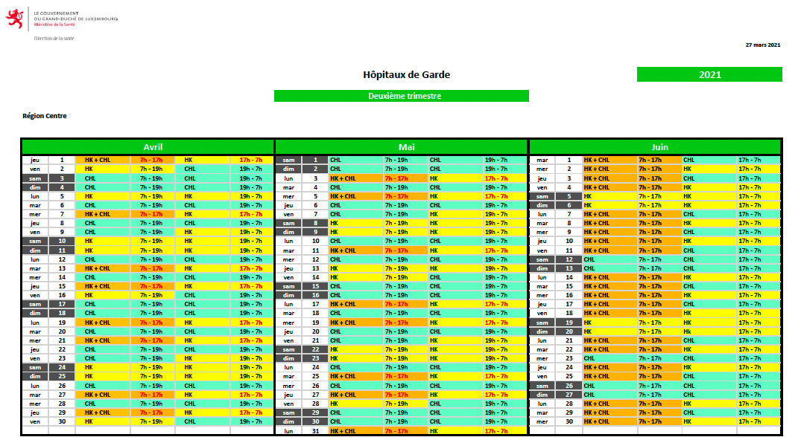Sur la page « Urgences », le fichier Plan-de-garde-2021-2e_4e-T.pdf n'est pas accessible. Il possède des non-conformités de contrastes et de structure.
Contenus en mouvement ou clignotants
Les contenus en mouvement peuvent être problématiques pour les utilisateurs avec des difficultés de lecture. En effet, un contenu qui défile trop rapidement empêche d'accéder de fait à l'information. De plus, le mouvement empêche les personnes avec un déficit de l'attention de lire le reste de la page.
Il faut alors permettre aux utilisateurs d'arrêter et de redémarrer le contenu en mouvement , ou d'afficher tout le contenu sans le mouvement ou de masquer le contenu en mouvement et de le réafficher.
Constats sur le site
Les deux carrousels de la page d'accueil (actualité et welcome) défilent automatiquement sans possibilité de contrôle.
Activation et annulation des actions sur un point unique
Certaines personnes handicapées motrices peuvent déclencher des fonctionnalités par inadvertance lorsque les événements déclencheurs sont mal gérés ou ne permettent pas dans certaines conditions de pouvoir être annulés.
Dans ces situations, il est indispensable que le site ou l'application propose pour chaque fonctionnalité basée sur un geste complexe une alternative au moyen d'un geste simple.
Les utilisateurs sont habitués à pouvoir annuler une action sur un lien ou un bouton en maintenant le bouton de la souris enfoncé (ou le doigt appuyé) puis en glissant en dehors de la zone interactive pour relâcher le pointeur (ou lever le doigt). Cela permet de ne pas déclencher l’événement associé au lien ou au bouton. Il s’agit ici de préserver cette stratégie d’annulation employée par les utilisateurs.
Cela concerne essentiellement les déclenchements de fonctionnalités sur les événements descendants (down event) tel que les événements « posé », « touché » et « pressé » sur surface tactile (touchstart) ou mousedown pour les pointeurs de type souris.
Constats sur le site
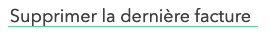Sur la page « Payer ma facture », à l'étape 2, le bouton « Supprimer la dernière facture » se déclenche à la pression et non au relâchement du clic.